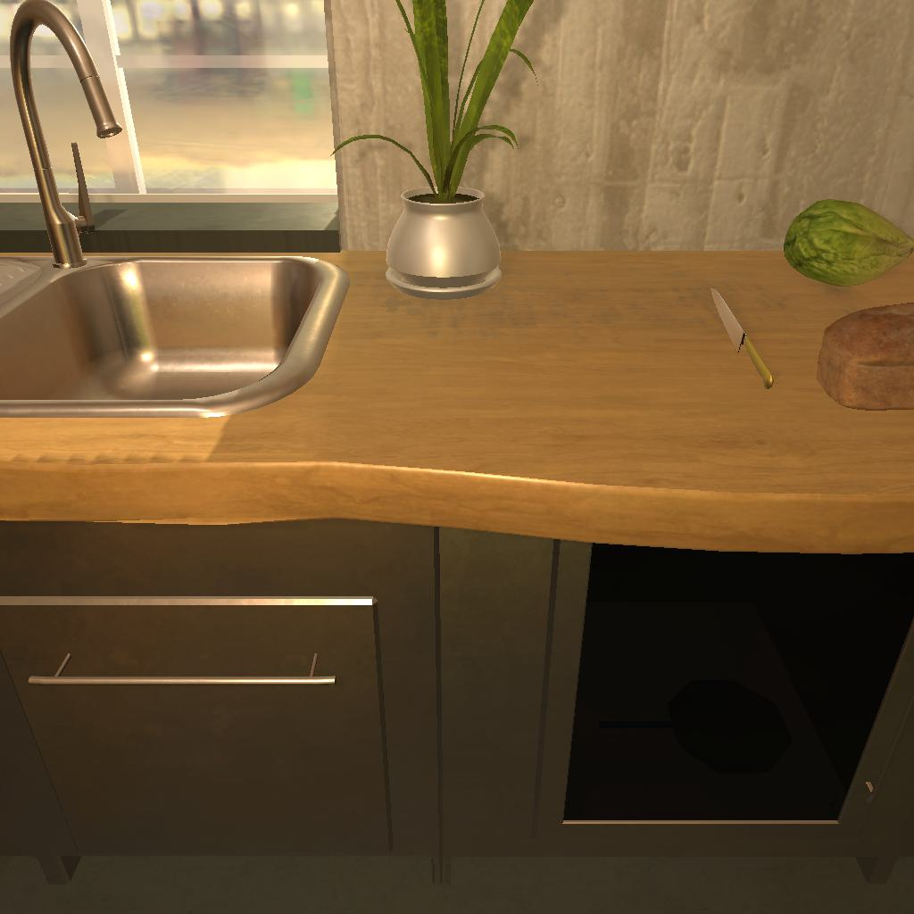
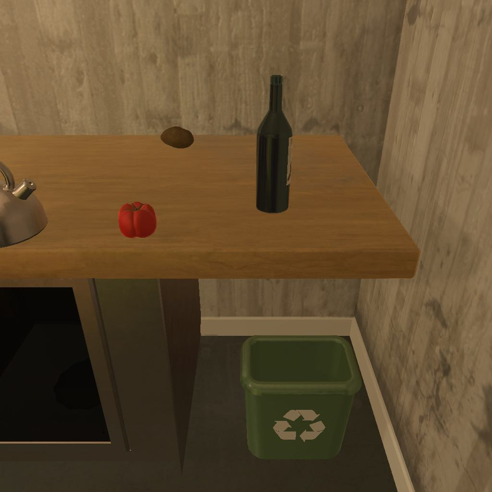

---------------------------------------------------------task: 26---------------------------------------------------------
--------------------------------------------------------------------------------------------------------------------------------------------------------------------
--------------------------------------------------------------------------------------------------------------------------------------------------------------------
Step:--------------------------------------------------------------------------5-------------------------------------------------------------------------------
----------------------------------------
VLM Prompt:
Image1:
Image2:
**Instruction**
1. Analyze the provided images to identify all visible household objects and compare the difference between images (e.h. whether the object is opened or not and taken on hand or not), focusing on those relevant to the task description "find two kettle and put them in cabinet."
2. Use the analysis of images and the task hint "The agent must find an object of the desired type, pick it up, find the correct location to place it, put it down there, then look for another object of the desired type, pick it up, return to previous location, and put it down there with the other object." to answer the question: what is the most reasonable action in the choices for the task description "find two kettle and put them in cabinet"?
3. Decide and write the answer using the template: The answer is: (i): , where i is the real number. If there is no desired object in images, search every place based on **Initial Observation** to find the object. And if no one is exactly correct, choose a similar answer.
**Initial Observation**
You are in the middle of a room. Looking quickly around you, you can see countertop (1), coffeemachine (1), cabinet (1-4), drawer (1-8), sink (1), sinkbasin (1), garbagecan (1), fridge (1), microwave (1), dresser (1), sidetable (1)
**Answer Choices**
(1): go to countertop 1
(2): go to coffeemachine 1
(3): go to cabinet 1
(4): go to drawer 1
(5): go to sink 1
(6): go to sinkbasin 1
(7): go to garbagecan 1
(8): go to cabinet 4
(9): go to drawer 2
(10): go to fridge 1
(11): go to microwave 1
(12): go to dresser 1
(13): go to sidetable 1
(14): go to drawer 3
(15): go to drawer 4
(16): go to drawer 5
(17): go to drawer 6
(18): go to drawer 7
(19): go to drawer 8
(20): open cabinet 3
(21): close cabinet 3
(22): examine cabinet 3
**Answer**
Let's think step by step by following the instructions.
----------------------------------------
----------------------------------------
Original Response:
1. Analyzing the provided images, we can identify various household objects, such as a sink, a plant, a knife, a kettle, a bottle, a tomato, and a recycling garbage can. There are no kettles visible in the images on the countertop, and no cabinets are open to indicate a kettle might be inside. The task is to find two kettles and put them in a cabinet.
2. Based on the task description and hint, the most reasonable action would be to search for a kettle. Since no kettle is visible on the countertop or in open cabinets in the provided images, we must search other areas mentioned in the Initial Observation.
3. The answer is: (3): go to cabinet 1, as it is the first cabinet mentioned in the Initial Observation and a logical place to start searching for a kettle to complete the task. If a kettle is not found in cabinet 1, the agent should continue searching other cabinets and drawers.
----------------------------------------
----------------------------------------
>>> Refine Original VLM Response and Get Pure Action: go to cabinet 1, as it is the first cabinet mentioned in the Initial Observation and a logical place to start searching for a kettle to complete the task
----------------------------------------
-----------------------------------------------------------------
Running time: 10.934181213378906 seconds
Total Money: 13.39044
-----------------------------------------------------------------
-----------------------------------------------------------------
Text Observation:Nothing happens.
-----------------------------------------------------------------
UNSUCCEED